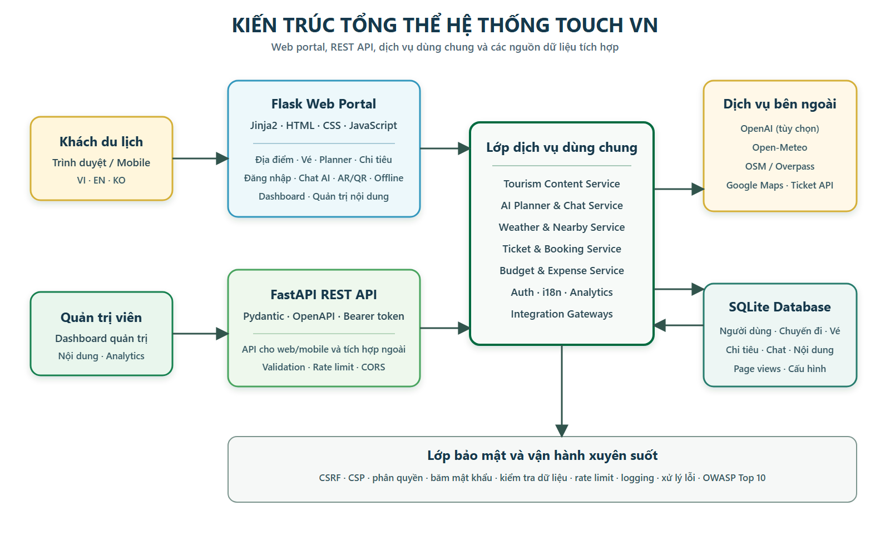
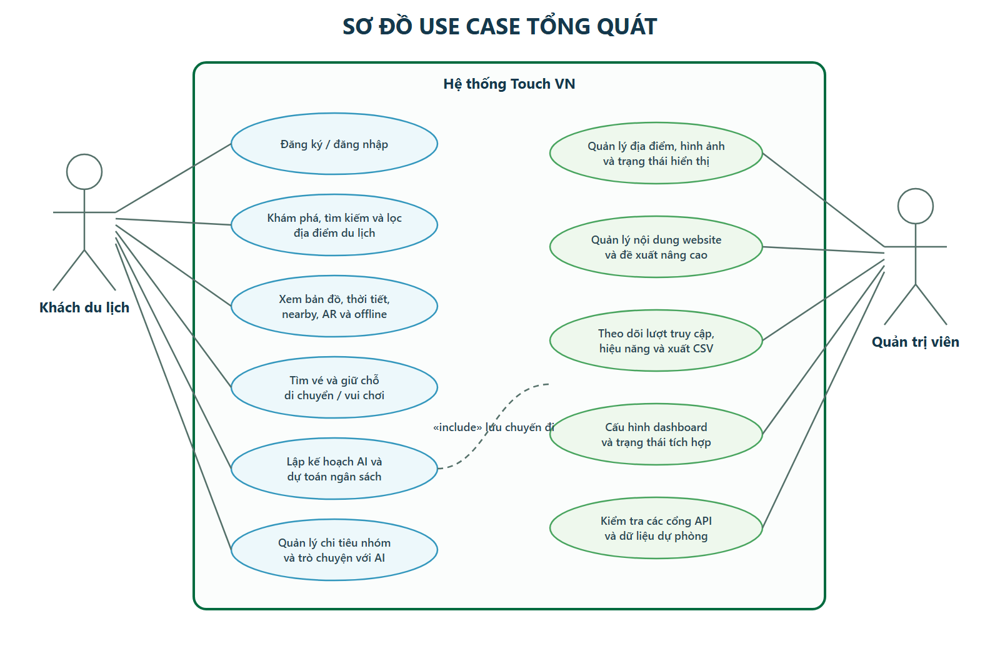
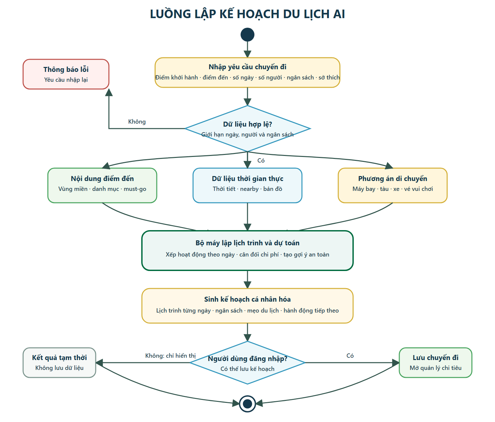
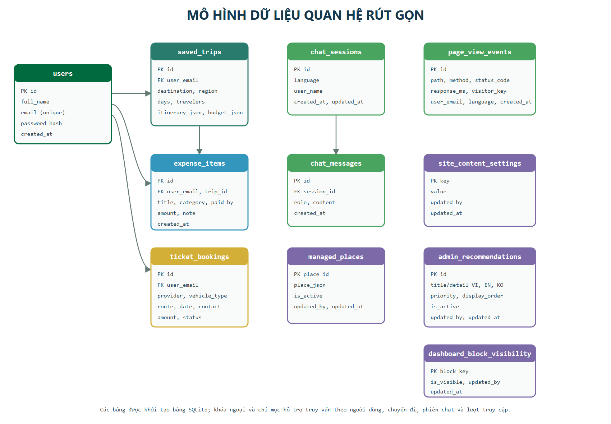

| Cán bộ hướng dẫn: [HỌ TÊN VÀ HỌC HÀM/HỌC VỊ] |
| Thời gian thực hiện: Từ ngày 14/07/2026 đến ngày 20/09/2026 (dự kiến) |
| Sinh viên thực hiện: Sinh viên: [HỌ VÀ TÊN] MSSV: [MSSV] Số điện thoại: [SỐ ĐIỆN THOẠI] |
Du lịch Việt Nam sở hữu hệ thống tài nguyên phong phú trải dài từ miền Bắc, miền Trung đến miền Nam, bao gồm núi, biển, hải đảo, di sản văn hóa, công trình tâm linh, ẩm thực và các khu vui chơi. Tuy nhiên, thông tin phục vụ một chuyến đi thường phân tán trên nhiều website và ứng dụng. Người dùng phải tự tổng hợp dữ liệu điểm đến, thời tiết, phương án di chuyển, vé tham quan, dịch vụ lân cận và ngân sách, khiến quá trình chuẩn bị mất nhiều thời gian và khó đồng bộ.
Đối với khách du lịch theo nhóm, bài toán còn mở rộng sang quản lý chi tiêu, xác định người thanh toán, đối soát các khoản chi và lưu lại kế hoạch để các thành viên cùng theo dõi. Khách quốc tế gặp thêm rào cản ngôn ngữ; khách đi đến vùng sâu, vùng xa có thể gặp tình trạng kết nối yếu; trong khi việc tiếp cận thông tin lịch sử tại di tích vẫn chủ yếu phụ thuộc vào bảng giới thiệu hoặc hướng dẫn viên.
Touch VN được đề xuất như một nền tảng du lịch số thống nhất, hỗ trợ người dùng trước, trong và sau chuyến đi. Hệ thống tập trung dữ liệu các địa điểm nổi tiếng theo ba miền, tổ chức theo đặc trưng và cung cấp trang chi tiết cho từng điểm đến. Từ một địa điểm cụ thể, người dùng có thể xem dự báo thời tiết, bản đồ, dịch vụ xung quanh, gói dữ liệu offline, mã QR và trải nghiệm AR trên camera.
Nền tảng tích hợp công cụ lập kế hoạch du lịch AI dựa trên điểm khởi hành, điểm đến, số ngày, số người, sở thích và ngân sách. Kết quả gồm lịch trình theo ngày, chi phí dự kiến và các khuyến nghị di chuyển. Chatbox nổi trên toàn website hỗ trợ giải đáp bằng ngôn ngữ tự nhiên về lộ trình, thời tiết, chi phí và địa điểm; khi có khóa API, hệ thống dùng mô hình OpenAI, nếu không sẽ chuyển sang cơ chế trả lời nội bộ để bảo đảm tính liên tục khi trình diễn.
Hệ thống được triển khai theo kiến trúc hai lớp ứng dụng bằng Python. Flask đảm nhiệm web portal và dashboard quản trị với Jinja2, HTML, CSS và JavaScript; FastAPI cung cấp REST API cho web/mobile và các hệ thống tích hợp. Hai lớp dùng chung mô hình dữ liệu, dịch vụ nghiệp vụ, cơ sở dữ liệu SQLite và các integration gateway. Cách tổ chức này giúp giảm lặp mã, dễ kiểm thử và tạo nền tảng để thay dữ liệu mẫu bằng nhà cung cấp thật.
Về vận hành, quản trị viên có thể cập nhật địa điểm, ảnh, nội dung website, đề xuất nâng cao, trạng thái hiển thị; theo dõi lượt truy cập, thời gian phản hồi và xuất dữ liệu CSV. Giao diện hỗ trợ tiếng Việt, tiếng Anh và tiếng Hàn, sử dụng bộ nhận diện vàng Gold, xanh lá đậm, xanh trời và sắc bình minh, trong đó Touch VN là tín hiệu thương hiệu chính.
Về an toàn, đề tài áp dụng các kiểm soát bảo mật theo OWASP Top 10 phiên bản hiện hành: phân quyền, băm mật khẩu, bảo vệ CSRF, Content Security Policy, kiểm tra dữ liệu đầu vào, truy vấn tham số hóa, giới hạn tần suất, cấu hình CORS, xử lý lỗi tập trung và logging. Các tích hợp ngoài được đặt thời gian chờ và có dữ liệu dự phòng để hạn chế lỗi lan truyền.
Xây dựng nền tảng du lịch thông minh Touch VN trên môi trường web và API, hỗ trợ khám phá điểm đến Việt Nam, lập kế hoạch bằng AI, tra cứu dịch vụ liên quan và quản lý chuyến đi trong một hệ thống thống nhất; đồng thời cung cấp công cụ quản trị nội dung, theo dõi vận hành và bảo vệ ứng dụng theo các thực hành an toàn web hiện đại.
Đề tài tập trung phân tích, thiết kế và triển khai nền tảng du lịch Việt Nam dưới dạng web responsive kết hợp REST API. Phạm vi được giới hạn để bảo đảm có thể trình diễn và nghiệm thu đầy đủ các luồng cốt lõi trong thời gian thực hiện.
Xác định nhu cầu của khách du lịch và quản trị viên, phân tích các giải pháp du lịch số hiện có, làm rõ khoảng trống về tích hợp dữ liệu, cá nhân hóa lộ trình, chi tiêu nhóm, đa ngôn ngữ, AR và hỗ trợ offline; từ đó xác lập yêu cầu chức năng và phi chức năng cho Touch VN.
Xây dựng hệ thống có kiến trúc rõ ràng, tách lớp trình bày, API, dịch vụ nghiệp vụ, truy cập dữ liệu và tích hợp ngoài. Giao diện phải responsive, hỗ trợ ba ngôn ngữ và thể hiện nhất quán bộ nhận diện Touch VN.
| Thành phần | Công nghệ | Lý do lựa chọn |
|---|---|---|
| Web portal | Flask 3.1, Jinja2 | Nhẹ, phù hợp server-rendered, quản lý session và dashboard; dễ tổ chức route và template. |
| REST API | FastAPI 0.135, Pydantic 2.12 | Validation theo type hint, sinh OpenAPI tự động, thuận lợi cho web/mobile và tích hợp. |
| Giao diện | HTML5, CSS3, JavaScript | Không phụ thuộc framework front-end lớn; đáp ứng responsive, camera, QR và tương tác form. |
| Cơ sở dữ liệu | SQLite | Triển khai gọn cho đồ án, giao dịch ACID, truy vấn SQL và có thể chuyển sang PostgreSQL khi mở rộng. |
| AI | OpenAI Responses API + logic nội bộ | Cung cấp chat tự nhiên khi có API key; fallback bảo đảm hệ thống vẫn hoạt động. |
| Bản đồ và nearby | Google Maps Embed, OSM/Overpass | Hiển thị vị trí trực quan và tìm tiện ích lân cận dựa trên tọa độ. |
| Thời tiết | Open-Meteo | Tra cứu dự báo theo kinh độ/vĩ độ, không buộc người dùng nhập tên trạm. |
| AR và offline | Camera Web, QR, JSON/GeoJSON | Phù hợp trình diễn trên trình duyệt di động và có đường nâng cấp sang WebXR/MapLibre. |
| Triển khai | Uvicorn, Waitress | Phục vụ FastAPI/Flask theo đúng chuẩn ASGI/WSGI, cấu hình được qua môi trường. |
| Nhóm | Module chính | Đầu ra |
|---|---|---|
| Khám phá | Tourism Content, Search & Filter, Must-go | Danh sách và trang chi tiết điểm đến |
| Kế hoạch | AI Planner, Budget, Saved Trips | Lịch trình từng ngày và ngân sách |
| Dịch vụ | Ticket Hub, Weather, Nearby, Maps | Vé, dự báo và tiện ích theo vị trí |
| Trải nghiệm | Chat, i18n, AR/QR, Offline Pack | Hỗ trợ tự nhiên và dữ liệu tại điểm đến |
| Tài khoản | Auth, Session, Dashboard, Expense | Dữ liệu cá nhân, chuyến đi và chi tiêu |
| Quản trị | Content, Place, Recommendation, Analytics, Integration | CRUD, số liệu vận hành và cấu hình |
| STT | Yêu cầu | Cách hiện thực trong Touch VN | Mức triển khai |
|---|---|---|---|
| 1 | Địa điểm theo ba miền | /places, /places/<id>; lọc region và trang chi tiết. | Hoạt động |
| 2 | Phân loại đặc trưng | Núi, đảo, biển, tâm linh, văn hóa, ẩm thực, lịch sử, vui chơi. | Hoạt động |
| 3 | Vé xe, tàu, máy bay, vui chơi | /tickets; tìm, giữ chỗ, lịch sử; integration gateway cho provider. | Nghiệp vụ web |
| 4 | Kế hoạch du lịch AI | /planner; lịch trình, chi phí, gợi ý theo sở thích và ngân sách. | Hoạt động |
| 5 | Địa điểm gần bạn | Geolocation + nearby service; OSM/Overpass hoặc provider ngoài, có fallback. | Hoạt động |
| 6 | Dự toán và chi tiêu nhóm | Budget breakdown, lưu chuyến và /expenses theo người thanh toán. | Hoạt động |
| 7 | Việt, Anh, Hàn | Bộ từ điển i18n, lựa chọn VI/EN/KO và dữ liệu đề xuất đa ngôn ngữ. | Hoạt động |
| 8 | Chatbox 24/7 | Popup toàn site, lịch sử chat, OpenAI tùy chọn và phản hồi nội bộ dự phòng. | Hoạt động |
| 9 | Giao diện theo nhận diện | Tone Gold #D4AF37, xanh #006B3F, trời/bình minh; responsive. | Hoạt động |
| 10 | Quản lý Admin | CRUD địa điểm/nội dung/đề xuất, theo dõi lượt truy cập và export CSV. | Hoạt động |
| 11 | Dashboard và cài đặt | KPI, top place, booking, trip, expense, block visibility và integration status. | Hoạt động |
| 12 | Đăng ký, đăng nhập | SQLite user, băm mật khẩu, session web, Bearer token API, admin role. | Hoạt động |
| 13 | Google Maps | Nhúng bản đồ tại danh sách/chi tiết và mở chỉ đường ngoài hệ thống. | Hoạt động |
| 14 | Dự báo thời tiết | Open-Meteo theo tọa độ, hiển thị nhiệt độ, điều kiện và lời khuyên. | Hoạt động |
| 15 | AR quét di tích | QR scanner, camera viewer và overlay nội dung theo địa điểm. | Phạm vi web |
| 16 | Bản đồ offline | Tải gói JSON/GeoJSON theo vùng từ trang chi tiết địa điểm. | Gói dữ liệu |
Ghi chú: “Nghiệp vụ web” và “Phạm vi web” mô tả đúng mức hiện thực của đồ án, không đồng nghĩa đã kết nối thanh toán hoặc SDK AR native trong môi trường production.
| Bảng | Chức năng | Quan hệ/đặc điểm |
|---|---|---|
users | Tài khoản người dùng | Email duy nhất, mật khẩu lưu dạng hash |
chat_sessions | Phiên trò chuyện | Một phiên có nhiều chat_messages |
chat_messages | Lịch sử câu hỏi/trả lời | Khóa ngoại session_id |
saved_trips | Kế hoạch đã lưu | Liên kết user_email, lưu itinerary/budget JSON |
expense_items | Khoản chi theo chuyến | Liên kết user_email và trip_id |
ticket_bookings | Giữ chỗ vé | Mã đặt chỗ duy nhất, liên kết người dùng |
managed_places | Địa điểm do admin cập nhật | Lưu place_json, trạng thái active |
site_content_settings | Thông tin website | Key-value và dấu vết cập nhật |
admin_recommendations | Đề xuất đa ngôn ngữ | VI/EN/KO, priority, display_order |
page_view_events | Analytics nội bộ | Path, status, response time, visitor, language |
dashboard_block_visibility | Cài đặt dashboard | Bật/tắt từng block hiển thị |
Kết hợp dữ liệu điểm đến với các nguồn dữ liệu động để đưa ra gợi ý thực tế, có thể giải thích ở mức nghiệp vụ và không làm gián đoạn trải nghiệm khi API bên ngoài không sẵn sàng.
| Tích hợp | Chế độ chính | Fallback |
|---|---|---|
| AI | OpenAI Responses API | Logic trả lời nội bộ theo từ khóa và ngữ cảnh |
| Thời tiết | Provider cấu hình hoặc Open-Meteo | Dự báo mẫu theo điểm đến |
| Nearby | Provider ngoài hoặc OSM/Overpass | Danh sách dịch vụ có sẵn trong dữ liệu điểm đến |
| Vé | External Ticket API | Kho offer nội bộ và cổng giữ chỗ |
| AR/Offline | Provider ngoài | QR-camera và gói JSON/GeoJSON nội bộ |
Đánh giá hệ thống không chỉ theo số lượng chức năng mà còn theo tính đúng, độ ổn định, khả năng sử dụng và mức kiểm soát các rủi ro web phổ biến. Chuẩn đối chiếu chính là OWASP Top 10:2025, kết hợp các kịch bản kiểm thử chức năng cho 16 yêu cầu.
| Mã | Rủi ro | Kiểm soát trong Touch VN |
|---|---|---|
| A01 | Broken Access Control | Kiểm tra session/Bearer, route admin riêng, xác minh quyền trước CRUD và export. |
| A02 | Security Misconfiguration | Biến môi trường, CORS allowlist, CSP, security headers, giới hạn upload, tắt debug khi production. |
| A03 | Software Supply Chain Failures | Khóa phiên bản requirements; rà dependency và cập nhật có kiểm soát trong kế hoạch CI. |
| A04 | Cryptographic Failures | Băm mật khẩu bằng Werkzeug, token ký, không hard-code secret; yêu cầu HTTPS khi triển khai thật. |
| A05 | Injection | Truy vấn SQLite tham số hóa, Pydantic validation, Jinja autoescape, giới hạn chiều dài input. |
| A06 | Insecure Design | Phân lớp, threat modeling theo use case, giới hạn nghiệp vụ, fallback và nguyên tắc quyền tối thiểu. |
| A07 | Authentication Failures | Password tối thiểu, rate limit login, session/token có thời hạn, thông báo lỗi không tiết lộ tài khoản. |
| A08 | Software or Data Integrity Failures | Kiểm tra kiểu tệp/định dạng, signed token, validation dữ liệu tích hợp trước khi lưu hoặc hiển thị. |
| A09 | Security Logging and Alerting Failures | Request ID, access/error log, page view/status/response time; tránh ghi mật khẩu và API key. |
| A10 | Mishandling of Exceptional Conditions | Error handler 404/500, timeout API ngoài, fallback, phản hồi lỗi chuẩn và không lộ stack trace. |

Luồng yêu cầu từ web portal hoặc REST API đều đi qua lớp dịch vụ dùng chung. Cơ sở dữ liệu và integration gateway được cô lập khỏi giao diện, giúp thay provider mà không phải viết lại toàn bộ luồng người dùng.

Khách du lịch có thể sử dụng các chức năng khám phá mà không cần tài khoản; đăng nhập là điều kiện để lưu chuyến, giữ lịch sử vé và quản lý chi tiêu. Quản trị viên được phân quyền để thực hiện các chức năng thay đổi dữ liệu và xem analytics.


Các bảng nội dung quản trị và analytics được thiết kế độc lập với dữ liệu chuyến đi để giảm liên kết không cần thiết. Những quan hệ được thể hiện trên sơ đồ là quan hệ khóa ngoại thực tế: người dùng–chuyến đi/vé/chi tiêu, chuyến đi–chi tiêu và phiên chat–tin nhắn.
| Nhóm | Tiêu chí | Ngưỡng/điều kiện |
|---|---|---|
| Chức năng | 16 yêu cầu có route/giao diện và kịch bản minh chứng | Không có luồng cốt lõi gây lỗi 500 |
| Dữ liệu | Truy vấn, lưu và đối soát đúng người dùng/chuyến đi | Không lẫn dữ liệu giữa các tài khoản |
| Hiệu năng | Route nội bộ phản hồi ổn định trong môi trường demo | Mục tiêu ≤ 2 giây, không tính API ngoài |
| Responsive | Không tràn/đè chữ trên desktop và mobile phổ biến | Kiểm tra tối thiểu 1440 px và 390 px |
| Ngôn ngữ | VI/EN/KO hoạt động ở các luồng chính | Không hiển thị khóa dịch thô |
| Bảo mật | Kiểm soát OWASP, auth, CSRF, rate limit và headers | Các kiểm thử tiêu cực chính bị chặn đúng |
| Chịu lỗi | Provider ngoài lỗi vẫn có phản hồi có kiểm soát | Không lộ stack trace hoặc làm trắng trang |
| STT | Công việc | Ngày bắt đầu | Ngày kết thúc | Trạng thái |
|---|---|---|---|---|
| 1 | Trao đổi và thống nhất đề tài; khảo sát nhu cầu, thu thập tài liệu, chuẩn hóa 16 yêu cầu và xác định phạm vi. | 14/07/2026 | 19/07/2026 | Đã thực hiện |
| 2 | Phân tích use case, kiến trúc, cơ sở dữ liệu, giao diện và kế hoạch kiểm thử; xây dựng dữ liệu mẫu ba miền. | 20/07/2026 | 26/07/2026 | Đang thực hiện |
| 3 | Hoàn thiện web portal và REST API cho địa điểm, tìm kiếm, auth, bản đồ, thời tiết và đa ngôn ngữ. | 27/07/2026 | 09/08/2026 | Dự kiến |
| 4 | Hoàn thiện planner AI, chatbox, nearby, vé, dự toán, lưu chuyến và chi tiêu nhóm. | 10/08/2026 | 23/08/2026 | Dự kiến |
| 5 | Hoàn thiện admin dashboard, analytics, nội dung, đề xuất, AR/QR, offline pack và integration gateway. | 24/08/2026 | 06/09/2026 | Dự kiến |
| 6 | Rà soát OWASP Top 10:2025, kiểm thử chức năng–bảo mật–responsive, sửa lỗi và đóng gói ứng dụng. | 07/09/2026 | 13/09/2026 | Dự kiến |
| 7 | Tổng hợp kết quả, hoàn thiện báo cáo, tài liệu hướng dẫn, slide và chuẩn bị bảo vệ đề tài. | 14/09/2026 | 20/09/2026 | Dự kiến |